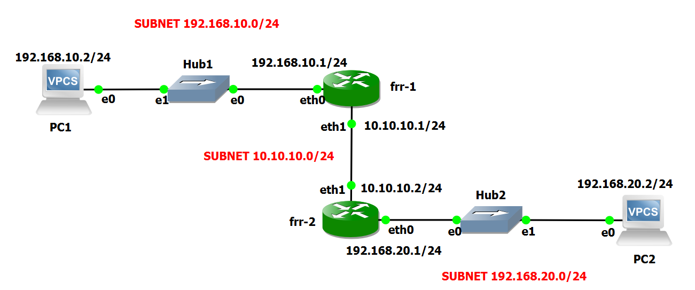
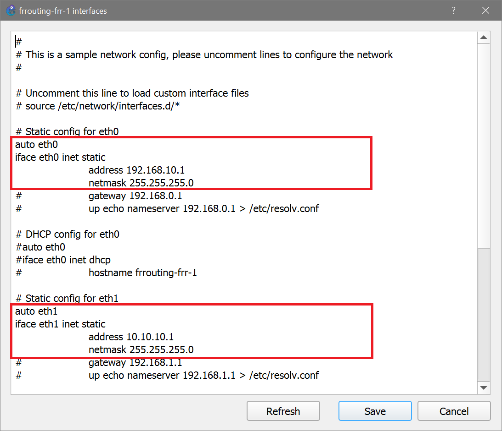
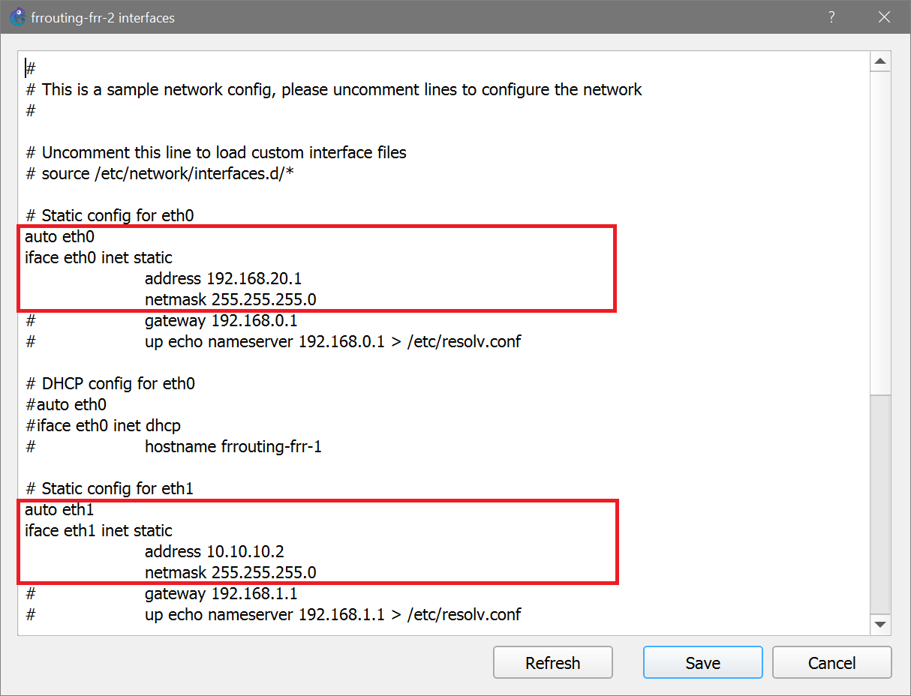

Lab #3
Two LANs connected by two routers
The purpose of this lab is to show how two LANs can be connected by means of two routers.
This situation happens, for instance, when two LANs are located in two geographically separated sites.
Preparation steps
This lab requires the GNS3 VM to instantiate a Docker container of a Linux-based router.
In particular, it requires that you have already executed once the preparation steps described for Lab #2.
Experiment steps
- Recreate the following topology in GNS3. Choose the "GNS3 VM" server to instantiate all the devices of this lab.

- When the devices are still inactive, right-click on the frr-1 router icon and select the Configure option.
- Press Edit to modify the router's network configuration.
- Modify the router's interfaces configuration as illustrated in the following picture.

- Subsequently, right-click on the frr-2 router icon and select the Configure option.
- Press Edit to modify the router's network configuration.
- Modify the router's interfaces configuration as illustrated in the following picture.

- Start all devices.
- Open PC1 terminal and execute the following commands:
ip 192.168.10.2/24 192.168.10.1
save
- Open PC2 terminal and execute the following commands:
ip 192.168.20.2/24 192.168.20.1
save
- Start capture on link connecting frr-2 to PC2.
- In PC1 terminal execute the command:
ping 192.168.10.1 -c 3
and verify that answers are received from the default gateway.
- In PC1 terminal execute the command:
ping 192.168.20.2 -c 3
and verify that answers are NOT received from PC2.
This happens because frr-1's routing table has no entries matching the destination IP address 192.168.20.2.
- Right-click on the frr-1 router icon and select the Auxiliary console option.
- In frr-1 terminal, type the command:
route add -net 192.168.20.0/24 gw 10.10.10.2
- In PC1 terminal execute the command:
ping 192.168.20.2 -c 3
and verify that answers are still NOT received from PC2.
Now, ICMP echo request packets are actually delivered to PC2. The ping, however, does not work because ICMP echo reply packets do not find their way to PC1.
In fact, frr-2's routing table has no entries matching PC1's address 192.168.10.2.
- Right-click on the frr-2 router icon and select the Auxiliary console option.
- In frr-2 terminal, type the command:
route add -net 192.168.10.0/24 gw 10.10.10.1
- In PC1 terminal execute again the command:
ping 192.168.20.2 -c 3
and verify that answers from PC2 are now received.
- In PC2 terminal execute the command:
ping 192.168.10.2 -c 3
and verify that answers from PC1 are received.
Return to list of labs
Copyright (c) 2024 - Roberto Canonico
Last updated: April 30, 2026 by Roberto Canonico